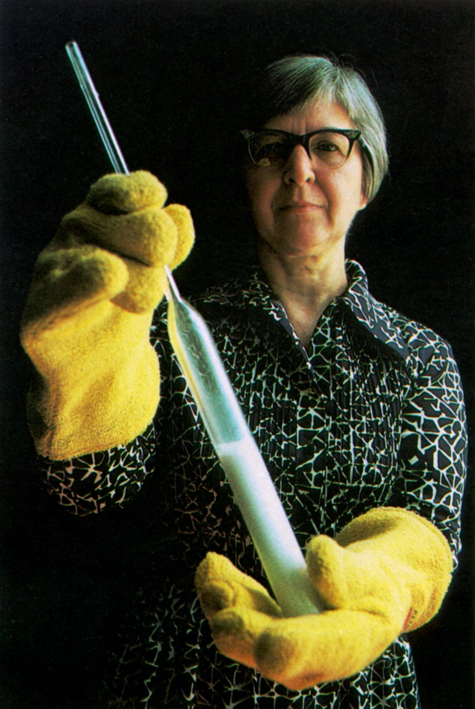

Biography
Stephanie Kwolek was an American chemist. She was a pioneer in polymer research whose work yielded the ultrastrong and thick material, or Kevlar. This material is used in bulletproof vests and has saved many lives.
Stephanie was born in New Kensington, PA. Sadly, her father died when she was 10. Her mother raised her and her brother alone. In 1946, she she received a Bachelor of Science degree in chemistry from the Carnegie Institute of Technology, now known as Carnegie Mellon University. She eventually wanted to go to medical school, but she went to work as a laboratory chemist at the rayon department of the DuPont Company in Buffalo, New York. The DuPont company was responsible for the invention of the popular fabric, nylon.  Synthetic fibers became very popular, so Kwolek became engaged in basic research in a new field. Because the field grew very fast, she never left the DuPont company. She moved to the company's Pioneering Research Laboratory in Wilmington, Delaware in 1950. She retired with the rank of research associate in 1986. She accumulate many awards and patents in her career and continued as a consultant and public speaker after retirement.